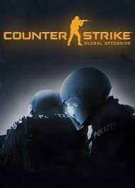
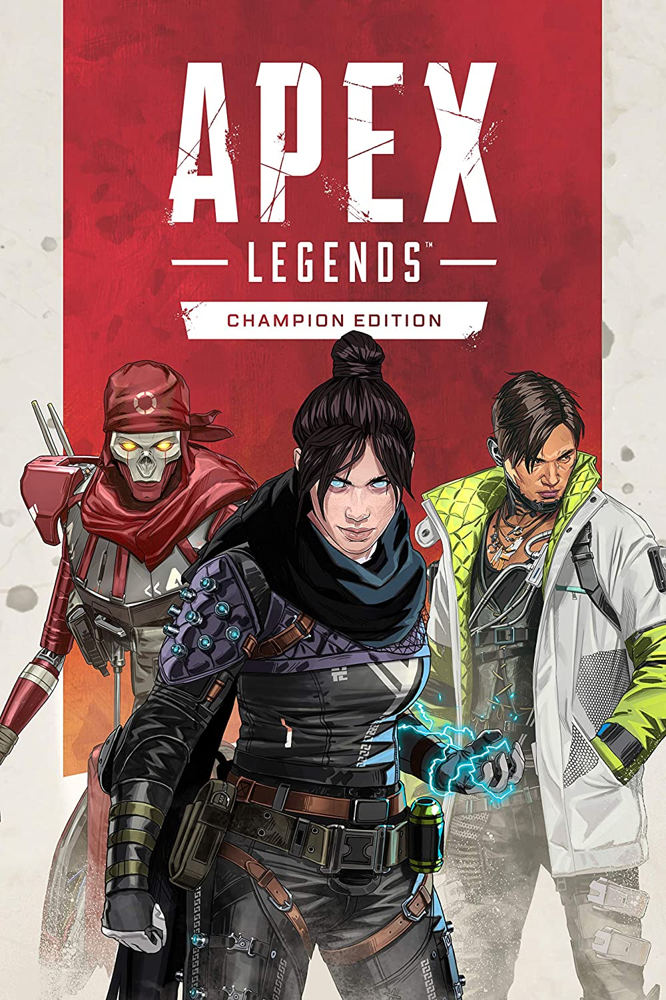

JUEGOS MODO HISTORIA
The Last Of Us

The Last of Us es un videojuego de terror, acción y aventura desarrollado por la compañía estadounidense Naughty Dog y distribuido por Sony Computer Entertainment para la consola PlayStation 3 en 2013. La trama describe las vivencias de Joel y Ellie, un par de supervivientes de una pandemia en Estados Unidos que provoca la mutación de los seres humanos en criaturas caníbales.
Until Dawn

Until Dawn es un videojuego de terror narrativo perteneciente a los subgéneros horror de supervivencia y Drama Interactivo desarrollado por Supermassive Games y publicado por Sony Computer Entertainment, para PlayStation 4. Fue originalmente programado para ser lanzado en PlayStation 3, pero en agosto de 2014, el juego fue reintroducido como exclusivo para PlayStation 4. Fue lanzado el 25 de agosto de 2015 en Norteamérica y el 26 de agosto del mismo año en el resto del mundo.
A Plague Tale: Innocence

A Plague Tale: Innocence es un videojuego de acción-aventura y de lógica desarrollado por la compañía francesa Asobo Studio y publicado por Focus Home Interactive. El jugador toma el control de Amicia de Rune desde una perspectiva en tercera persona, con una jugabilidad centrada en el sigilo y la resolución de puzles.
SHOOTERS COMPETITIVOS
VALORANT

Valorant es un hero shooter en primera persona multijugador gratuito desarrollado y publicado por Riot Games. El juego se anunció por primera vez con el nombre en clave Project A en octubre de 2019. Fue lanzado para Microsoft Windows el 2 de junio de 2020 después de su beta cerrada lanzada el 7 de abril de 2020. Valorant se inspira en la serie de videojuegos de disparos táctico Counter-Strike y toma prestadas varias mecánicas, como el menú de compra, los patrones de spray y la imprecisión al moverse.
Counter-Strike: Global Offensive
Counter-Strike: Global Offensive (CS:GO) es un videojuego de disparos en primera persona desarrollado por Valve Corporation y Hidden Path Entertainment. Es el cuarto juego de la saga Counter-Strike. Fue lanzado al mercado en agosto de 2012 para las plataformas de Microsoft Windows, macOS y Xbox 360 y PlayStation 3. La versión para Linux estuvo disponible al público en septiembre de 2014.
APEX LEGENDS
Apex Legends es un videojuego gratuito perteneciente a los géneros battle royale y hero shooter en primera persona, desarrollado por Respawn Entertainment y publicado por Electronic Arts. Fue lanzado para Microsoft Windows, PlayStation 4 y Xbox One el 4 de febrero de 2019. En julio de 2020 se anunció que el título llegaría a Steam a finales de 2020, junto al juego cruzado entre las plataformas. El 9 de marzo de 2021, el juego llegó a Nintendo Switch.